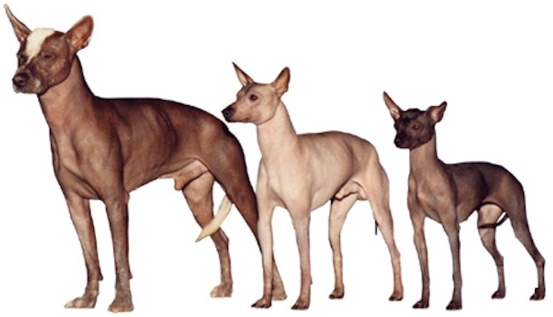
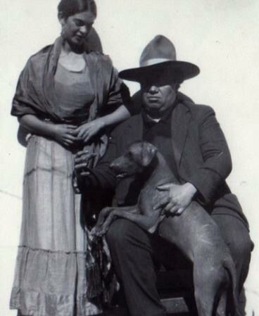
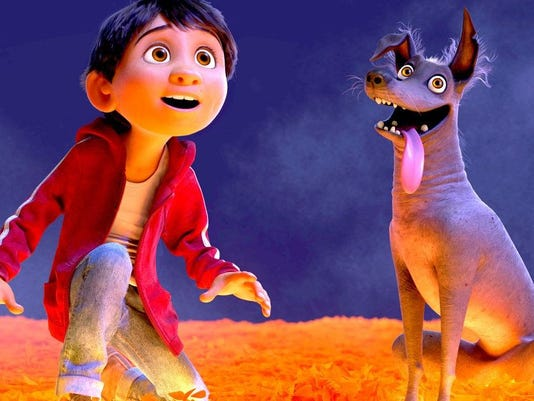

Xolotl is the Aztec god of life and death. Itzcuintli is nahuatl for "dog."
Whereas many other hairless dogs and cats are a result of humans breeding them, the Xoloitzcuintli developed with little human intervention.
As hinted in the previous fact, Xolos are a primitive breed. Depictions of these intelligent, independent dogs date as far back as pre-Colombian times.
| Breed | Culture | Present |
|---|---|---|
| Xoloitzcuintli are typically found in 3 sizes: standard, miniature, and toy. | Art icons - Frida Kahlo and Diego Rivera - pictured with a Xolo. | Miguel and his dog, Dante, in Disney's animated film, Coco. |
|  |  |  |